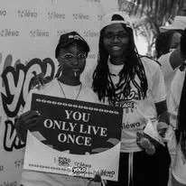

Mes 4 Pôles
Découvrez mon
champ d'action
De l'animation sur scène à la stratégie digitale, de la production cinématographique à l'innovation éco-responsable. Chaque univers est une nouvelle façon de m'engager.
Donner de la voix
Animation & Événements
L'animation n'est pas qu'une question de prise de parole, c'est l'art de captiver un public, de rythmer un événement et de créer des souvenirs mémorables.
- Animation de cérémonies officielles et galas
- Maîtresse de cérémonie (MC) pour festivals
- Modération de panels et conférences

Stratégie & Impact
Communication Digitale
À l'ère du numérique, l'image de marque est essentielle. J'accompagne les projets dans leur déploiement stratégique sur les réseaux sociaux et la création de contenu à forte valeur ajoutée.
- Création de contenu (vidéo, rédactionnel)
- Gestion de l'e-réputation
- Élaboration de stratégies de communication 360°

Devant et derrière la caméra
Cinéma & Régie Plateau
Le monde du septième art est un espace où l'exigence rencontre la créativité. Forte de mes expériences, notamment au Festival International des Arts du Bénin, j'interviens autant devant la caméra qu'en back-office.
- Interprétation et jeu d'actrice
- Régie plateau pour productions cinématographiques
- Coordination d'équipes de tournage

Action et écologie
Entrepreneuriat Social
L'engagement passe par l'action. Face aux défis environnementaux, j'ai fondé une initiative de création et confection d'emballages biodégradables à Grand-Popo. C'est ma contribution concrète à un Bénin plus vert.
- Confection d'emballages éco-responsables
- Sensibilisation à l'écologie locale
- Formation et entrepreneuriat féminin